For at komme i seng må du gå gennem stuen. Kan en dør gøre mere for boligen end et ekstra værelse? Fra prøvelejligheden i Ryesgade går turen til tegnebordet, hvor tre forskellige svar får lov at stå åbne.
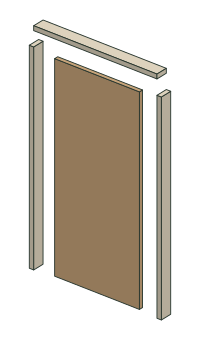
Tre rum på rad
Hvis du står ved gadevinduet i Ryesgade 30 C og lægger en finger på den gamle plan, kan du rejse et godt stykke uden at forlade lejligheden. Først gennem gadestuen, så forbi det næste opholdsrum og ind gennem sidefløjen mod endeværelset. Undervejs drejer væggene lidt. Der er langt fra fortovet til det sidste vindue.
Før byfornyelsen valgte projektets folk denne treværelses lejlighed på første sal til forsøg. To stuer lå en suite, med en forbindelse mellem sig. Soveværelset lå længere inde. Dertil kom køkken, bad og fordelingsgang. På tavlen har vi taget de tre opholdsrum ud af planen og drejet dem, så man kan følge rækken fra venstre mod højre. I mellemrummene på tavlen ligger der også dele af boligen.
Før du tegner en ny væg i et hus som dette, er det værd at gå hele vejen. Hvem skal forbi hvem for at komme hjem, i seng eller bare hen til et vindue?
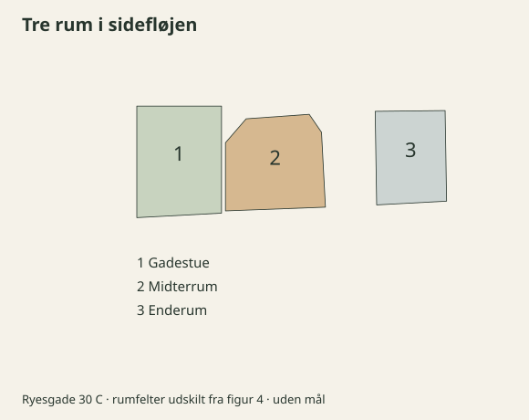
Tre opholdsrum udskilt fra kildens figur 4. Gaden ligger ved felt 1. De tegnede felter viser rumfølgen i prøvelejligheden. Køkken, bad, gang og trapper findes på originalplanen.
Flyt fingeren tilbage til gaden. I projektets prøvelejlighed kunne to vinduer i den samme stue fortælle hver sin historie. På tegningen er der sat ord på forskellige forsøg ved vinduerne. En beboer ville se vindueskarmen, lyset og gaden udenfor. Forsøgets folk kunne også følge, hvad der skete inde ved lysningen.
De sammenlignede flere måder at bevare eller udskifte vinduer på og afprøvede blandt andet indvendig isolering og ventilation. Da selve ejendommen siden blev renoveret, fik den nye vinduer, nye køkkener og badeværelser. I to af opgangene blev bagtrappen inddraget for at give plads til større køkkener. Her fik en beslutning i ét rum følger for hele opgangen.
Vi låner én ting fra den fremgangsmåde. Før vi forelsker os i en ny plan, laver vi en lille prøve, hvor to løsninger kan ligge ved siden af hinanden. De tre forslag i denne bog er vores egne. Ingen af dem beskriver et udført indgreb i Ryesgade.
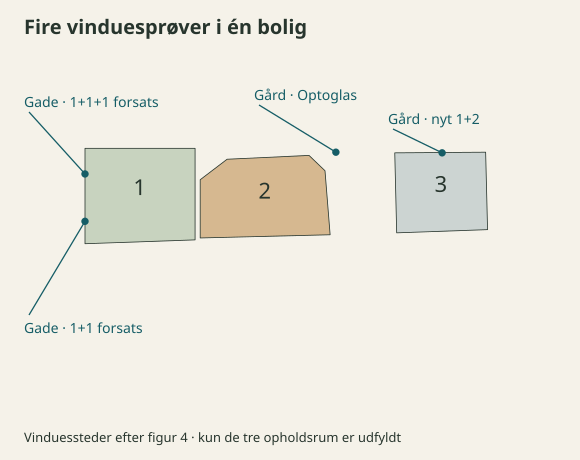
Placeringen af gade- og gårdvinduer er aflæst i forsøgets figur 4. Tavlen knytter forsøgene til rumfølgen. Detaljerne ved hvert af de fire vinduer står på originaltegningen.
Der er kommet et nyt ark på bordet. Det ene rum har en dør fra gangen. Det andet har kun døren gennem det første. En seng kan sagtens stå ved det fjerneste vindue. Men en seng alene gør ikke rummet til et godt soveværelse for den, der gerne vil kunne gå til og fra uden at forstyrre nogen.
Dette er bogens værkstedsplan. Vi har tegnet to ensartede rum, tilsammen otte meter brede mellem ydervæggene, og en gang langs den ene side. Det er et nyt, tænkt udsnit af en bolig. Køkken og bad ligger uden for tegningen. Derfor kan vi holde facaden, vinduerne og installationernes placering i ro, mens vi undersøger de indvendige forbindelser.
Prøv at lægge et stykke papir over feltet mellem rummene. Uden den åbning er der ingen vej ind i rum 2. Så lidt skal der til for at ændre hele læsningen af en bolig.
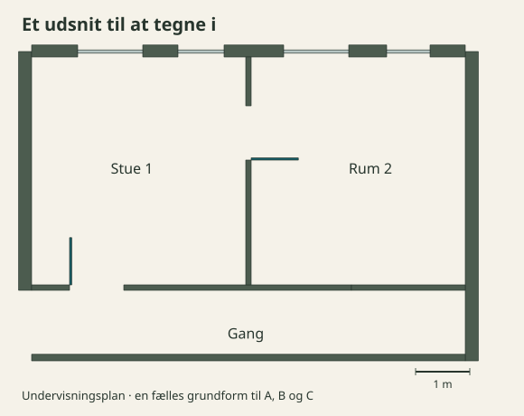
Før-plan. De mørke streger er vægge, de lyse felter ved facaden er vinduer, og de blågrønne streger viser dørblade i åben stilling. Målestokken gælder denne undervisningsmodel.
Forestil dig en kop te på en bakke. Du går ad gangen, åbner døren til stuen og skal nu næsten hen til vinduerne, før du kan dreje ind i det andet rum. Der er god plads på en tom tegning. Prøv samme tur, når to mennesker sidder ved et bord midt i stuen, og en stol er trukket ud.
Den orange streg på tavlen følger én mulig tur med bakken. Find det sted, hvor du ville sætte bordet, og tegn en lille ring om det. Krydses ringen af din vej? En åbning mellem to stuer er både en gave og en aftale. Den giver udsyn og kontakt, men en del af gulvet må stå frit til passage.
På en rigtig besigtigelse ville jeg bede den, der bor her, vise turen. Måske står teen i et helt andet rum. Bakken er opdigtet til bogen. Det er beboerens egen tur, der bør afgøre, hvad der er værd at tegne om.
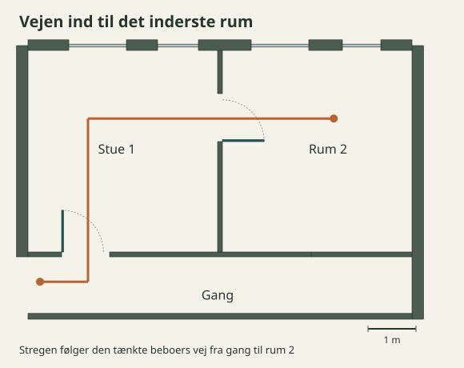
Før-plan med én mulig ganglinje. De små prikker angiver turens begyndelse og slutning. Møbler kan flytte ruten, mens døråbningerne bestemmer, hvor den skal igennem.
I det første forslag lader vi døren mellem stuerne vandre ned mod gangen. Træd ind som før. Nu kan du dreje til højre kort efter den første dør. Familien kan sætte bordet tættere ved det vindue, hvor du før skulle forbi. Lidt længere oppe står den gamle døråbning tilbage som et felt, der skal lukkes.
Hvad har vi vundet? Den daglige passage tager et mindre stykke af stuens gulv. Hvad har vi givet fra os? Den, der sidder ved vinduet, ser nu ind på et lukket vægfelt, hvor der før var kig til det andet rum. Og den, der sover derinde, skal stadig gennem stuen.
Gevinsten er størst for to stuer, der gerne må hænge sammen. Hvis familiens egentlige ønske er en selvstændig soveplads, bruger forslaget både en ny åbning og en lukning uden at løse det, som fik dem til at ringe.
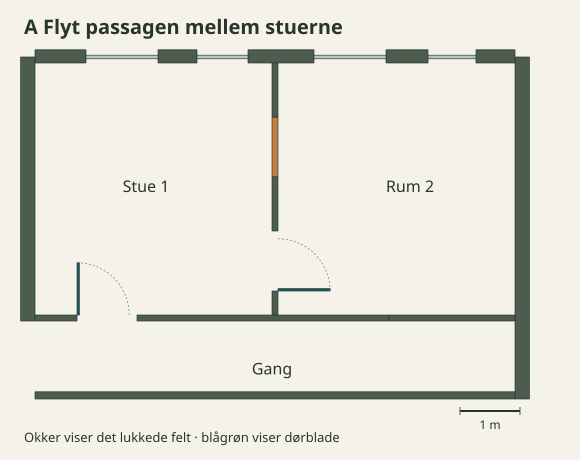
Forslag A. Åbningen mellem rummene er flyttet mod gangen, og den tidligere åbning er lukket med det okkerfarvede felt. Gangen giver fortsat kun direkte adgang til stue 1.
På tegningen kan man flytte en dør med to streger. Ude i huset får man to forskellige arbejdssteder. Ved den nye placering møder man den væg, der skal åbnes. Ved den gamle står der en karm med gerigter på begge sider, måske en fodliste, der ender pænt mod indfatningen, og to gulve, som møder hinanden ved tærsklen.
Se på de to vægstykker på tavlen. Ved før-planens blågrønne blad ligger der nu et stykke lukket væg i forslag A. Begge åbninger er tegnet en meter brede i vores prøve. Det tal fortæller noget om det valgte eksempel. Det fortæller endnu intet om den virkelige vægs opbygning eller om de kræfter, den tager.
På stedet ville vi først se efter eksisterende tegninger, få væggens funktion undersøgt og registrere begge sider. Et fotografi af stuk eller en stikkontakt i den nye åbning kan ændre placeringen, før nogen løfter en hammer.
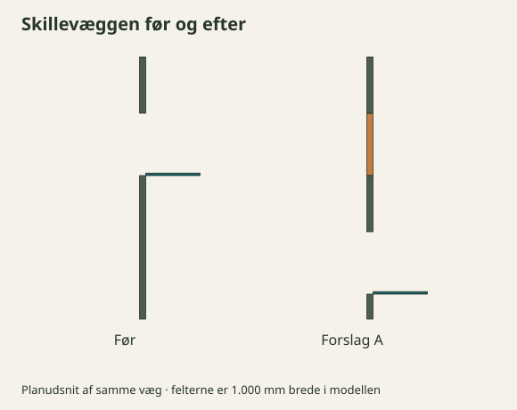
Udsnit i plan af skillevæggen før ændringen og i A. Bladet er vist åbent. Det afbrudte vægforløb viser åbningens plads. Overliggere og installationer indgår ikke i modellen.
Den anden tegning begynder ved gangens væg. Her får rum 2 sin egen dør. Forbindelsen mellem stuerne bliver lukket. Når den første i husstanden kommer hjem sent, kan vedkommende gå direkte til sit værelse. Den anden kan lade avisen ligge bredt ud over bordet i stuen. Turen forbi bordet er forsvundet.
Vi har ændret rumfordelingen ved at ændre adgangen. Kvadratmeterne i begge rum er de samme. Forskellen er, hvem der må gå igennem dem. Det tidligere indre opholdsrum kan nu indgå i hverdagen som en mere privat del af boligen. I prøven er gangdøren ny, og den tidligere mellemdør tages ud. Om den kan få en anvendelse et andet sted, afhænger af, om nogen tager ansvar for den.
Forestil dig også en søndag med gæster. Nu kræver turen mellem de to vinduesrum en omvej gennem gangen. Et selvstændigt værelse har kostet huset forbindelsen mellem de to stuer.
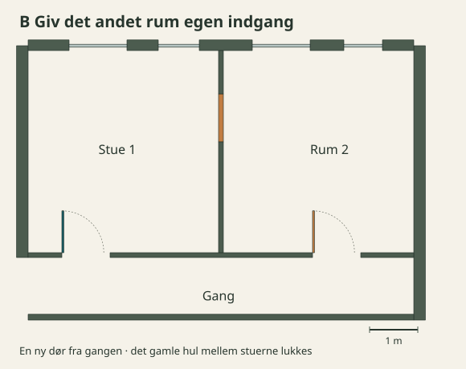
Forslag B. Den nye dør i gangvæggen og den lukkede åbning har okkerfarve. Begge rum har adgang fra gangen. Dørbladet fra den gamle åbning er taget ud.
Tænk på to mennesker, som deler en bolig og har hver sin døgnrytme. Den ene sætter nøglen i låsen, mens den anden allerede sover. På B-planen kan du føre en blyant fra gangen ind i hvert sit rum uden at krydse naboens gulv. Det er en egenskab ved den tegnede plan, som kan vises med to streger.
Det næste spørgsmål kan tegningen ikke svare på. Hvor meget hører den sovende, når den anden lukker sin dør? Der kommer nu aktivitet lige foran begge rum. En lukket åbning mellem rummene har samlinger ved gulv, loft og vægge. Dørene har også sprækker og beslag. Den oplevede ro afhænger af mere end en ny streg på planen.
Tag en stol med ind til det sted, hvor sengen tænkes placeret. Lyt, når dørene lukker, og prøv ruten med en taske i hånden. De to prøver fortæller om forskellige sider af den samme hverdag.
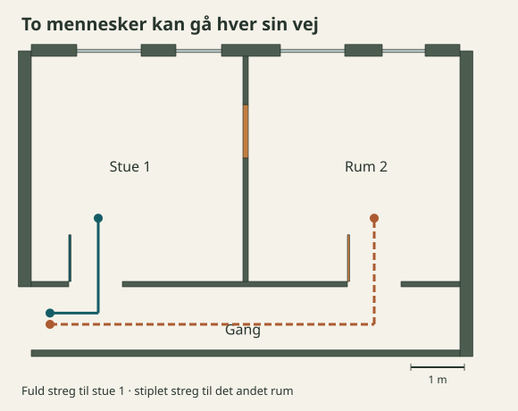
Forslag B med to mulige ruter fra fælles gang. Stregerne viser adgang. Tegningen indeholder ingen lydmåling eller vurdering af lydisoleringen.
Det tredje forslag begynder med et stykke træ, man allerede har. Åbn mellemdøren og forestil dig, at bladet er løftet af hængslerne. Der er stadig en åbning i væggen, og de to stuer hænger stadig sammen. Nu vil vi prøve, om det samme blad kan bruges ved den nye adgang fra gangen.
På tegningen er det lykkedes på modellens egne mål. Rum 2 kan nås ad to veje. En person kan gå ind med en kurv fra gangen, mens en anden går direkte mellem stuerne. Til en lang middag kan de to rum opleves som et forløb. Hvis rummet en dag skal være et aflukket soveværelse, står den åbne passage mellem stuerne straks i vejen.
Derfor er C et forslag til mennesker, som sætter pris på rundgangen og det fælles liv. Inden det gamle blad får nummeret på sin nye placering, skal det have lov at hænge på prøve i en karm, der passer til det.
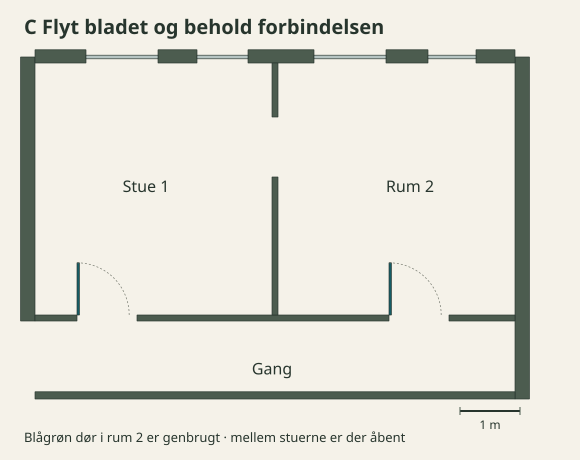
Forslag C. Det gamle blad er vist ved gangåbningen til rum 2. Passagen mellem stuerne står åben. De to gangdøre har samme farve, fordi begge bladene kommer fra den tegnede før-plan.
Dørbladet fylder det meste af billedet, når man bærer det gennem en opgang. På bukken ser man straks den anden halvdel af opgaven. Et blad kan være helt og smukt og alligevel være vanskeligt at hænge om. Hængslerne har en bestemt side. Fallen skal møde et slutblik. Kanten, der lukker ind i karmens fals, skal passe hele vejen fra overkant til gulv.
På tavlen står blad og karmstykker skilt ad. I øvelsen er bladet 870 mm bredt. Inden en konkret flytning ville jeg tegne en lille profil af falsen og notere bladbredde, højde, tykkelse og hængslernes placering. Mærk delene, mens de stadig hænger sammen. Et foto med døren halvt åben gør det lettere for den næste at forstå slagretningen.
Bogens C-plan viser det gamle blad ved en ny åbning. Den tager ikke stilling til, om karm og beslag kan reddes hele. Den afgørelse begynder med hænderne på det virkelige træ.
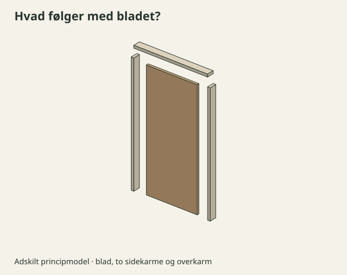
Adskilt principmodel af blad, sidekarme og overkarm. Delene er rykket fra hinanden for at kunne ses. Fals og beslag skal registreres på den faktiske dør.
Kig ned på en gammel døråbning. Her kan en smal tærskel have dækket over forskellen mellem gulvene i to rum. Når døren er væk, bliver det synligt, om brædderne ligger i samme retning og højde. Man kan have brugt timer på en plan og først ved dette lille sted opdage, hvad det vil sige at få to rum til at hænge sammen.
I C har vi tegnet åbningen fri til passage. Tavlen viser én mulig detalje, hvor et tilpasset mellemstykke udfylder en stribe mellem brædderne. På ét gulv kan det være smukkest at lade tærsklen blive som minde om døren. På et andet vil den gøre det besværligt at køre en vogn gennem åbningen. Den beslutning kræver, at man ser og mærker overgangen.
Ryesgade-rapporten beskriver bræddegulv og loftsstuk i forsøgshjemmet. Den viser, hvor meget der ligger rundt om vores tynde vægstreg. Det tegnede mellemstykke er vores eget eksempel.
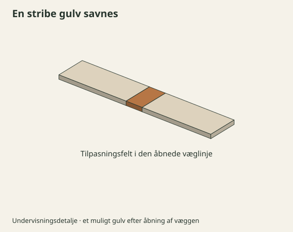
Skrå visning af gulvets overside. Det farvede mellemstykke viser en mulig lokal udfyldning. Snittet beskriver hverken bjælkelaget eller gulvet på Ryesgade.
Før en blyant rundt på C-planen uden at løfte spidsen. Fra gangen gennem stue 1. Videre ind i rum 2 og tilbage til gangen. Kredsen kan lukkes. Gør det samme på A og B. I begge tilfælde må du gå tilbage ad et stykke af den vej, du kom.
Man mærker rundgangen på en dag, hvor flere mennesker bruger rummene samtidig. Én kan dække bord, mens en anden finder stole gennem den anden dør. Den mærkes også, når nogen forsøger at trække sig tilbage. Et rum med to åbninger kræver lidt mere omtanke, hvis man gerne vil sidde i fred.
Kirstine Brøgger Jensens planstudier i GI’s renoveringsguide viser blandt andet et køkken, som man kan gå rundt om. Her har vi tegnet samme slags spørgsmål om hverdagsruter ind i en anden plan. Vi åbner forbindelsen mellem to stuer og holder de tunge køkkeninstallationer helt uden for prøven.
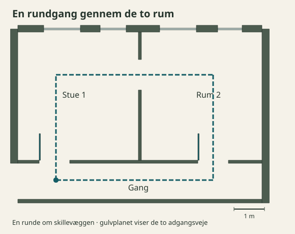
Den stiplede linje følger rundgangen i forslag C. Hver åben forbindelse skal kunne bruges med det bord, de stole og de dørslag, der faktisk er plads til.
Læg de tre tegninger i række og begynd med et enkelt ønske. Familien vil sidde ved vinduet uden at skulle rejse sig fra bordet, hver gang nogen skal videre. I A kan ruten dreje fra tidligere. I B kommer man helt uden om stuen. I C vælger man selv sin vej. Så langt ser alle tre lovende ud.
Skift nu spørgsmålet. Den ældste skal kunne sove, mens resten af familien bruger stuen. Så springer den åbne passage i C straks i øjnene. B giver en selvstændig indgang og en lukket væg mellem rummene. A bevarer turen gennem stuen. Ingen af ændringerne har skaffet boligen en eneste ekstra kvadratmeter.
På tavlen kan du tælle arbejdet. A giver én ny åbning, én lukning og ét flyttet blad. B giver én ny åbning og én lukning. Her købes ét blad, og det gamle tages ud. C giver én ny åbning, ingen lukning og ét flyttet blad. Vi tæller kun de blade, som skifter plads. Bladet i stue 1’s gangdør bliver siddende i alle tre. Karmene kræver en særskilt vurdering.
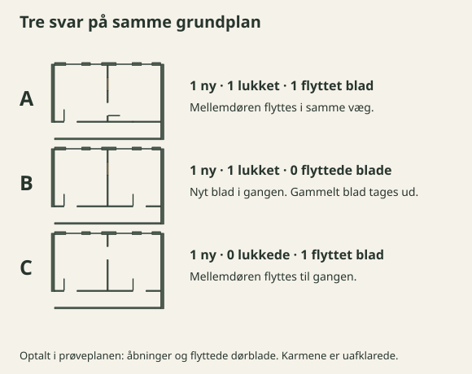
A, B og C er tegnet med identisk skalering. Sammenlign først de åbne veje, så de okkerfarvede lukninger. Alle tre griber ind i en væg, hvis faktiske funktion skal afklares.
Forestil dig, at I står i gangen med de tre ark i hånden. I har en halv time, før det bliver mørkt i det bageste rum. Gå derind sammen. Lad én bære en taske, mens den anden viser, hvor arbejdsbordet plejer at stå. Sæt jer ned på skift dér, hvor I håber at få ro. Det er en overraskende god måde at finde ud af, hvilken af de tegnede døre der er værd at arbejde videre med.
På vej ud kan I sætte tre mærker på en kopi. Ét ved det, der allerede fungerer. Ét ved det sted, hvor en ændring vil kunne mærkes hver eneste dag. Og ét ved det spørgsmål, som kun en opmåling eller en undersøgelse kan besvare. Gem også før-planen.
På Ryesgade begyndte et stort arbejde med forsøg i én lejlighed. Ved køkkenbordet kan et betydeligt mindre arbejde begynde med præcis den samme nysgerrighed. Hvad har vi her, og hvor lidt behøver vi egentlig at flytte?
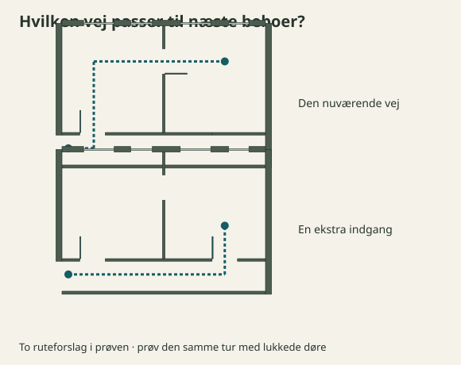
Øverst ses ruten gennem stue 1 i før-planen. Nederst giver C adgang direkte fra gangen. Tag begge tegninger med, og lad en beboer vise sine egne ruter.